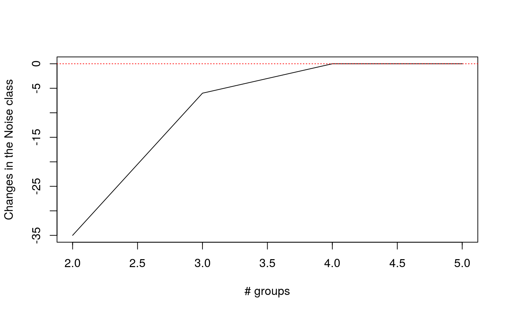

Plots clustering results
plot.mvegclust.RdCreate plots used to study vegclust clustering results for an increasing number of clusters
# S3 method for mvegclust plot(x, type="hnc", excludeFixed=TRUE, verbose=FALSE, ylim=NULL, xlab=NULL, ylab=NULL, maxvar=0.6, minsize=20,...)
Arguments
| x | An object returned from functions |
|---|---|
| type | A string indicating the type of plot desired. Current accepted values are "hnc","hmemb","var","hcs" and "valid". |
| excludeFixed | A flag to indicate whether clusters with fixed centroids should be excluded from plots. |
| verbose | A flag to print extra information. |
| ylim | A vector with the limits for the y axis. |
| xlab | String label for the x axis. |
| ylab | String label for the y axis. |
| maxvar | Maximum cluster variance allowed for the |
| minsize | Minimum cluster size allowed for the |
| ... | Additional plotting parameters. |
Value
Different information is returned depending on the type of plot chosen.
Author
Miquel De Cáceres, Forest Science Center of Catalonia
Examples
## Loads data data(wetland) ## This equals the chord transformation ## (see also \code{\link{decostand}} in package 'vegan') wetland.chord = as.data.frame(sweep(as.matrix(wetland), 1, sqrt(rowSums(as.matrix(wetland)^2)), "/")) ## Create noise clustering from hierarchical clustering at different number of clusters wetland.hc = hclust(dist(wetland.chord),method="ward")#>wetland.nc = hier.vegclust(wetland.chord, wetland.hc, cmin=2, cmax=5, m = 1.2, dnoise=0.75, method="NC")#> PROCESSING 2 MOBILE CLUSTERS #> PROCESSING 3 MOBILE CLUSTERS #> PROCESSING 4 MOBILE CLUSTERS #> PROCESSING 5 MOBILE CLUSTERS## Plot changes in the number of objects falling into the noise cluster plot(wetland.nc, type="hnc")## Plots the number of objects falling into "true" clusters, ## the number of objects considered intermediate, ## and the number of objects falling into the noise plot(wetland.nc, type="hmemb")